horizontal · habilidad 3

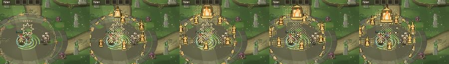
Cuatro atlas nativos. Animación de diagnóstico a 95 ms; no es el timing del juego. Fuentes, atlas y capturas reales conservadas. Definitiva y cuerpo existentes intactos.
12 fases, 12 RGBA distintos
12 fases, 12 RGBA distintos
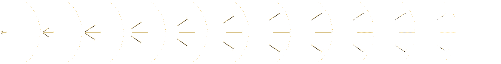
12 fases, 10 RGBA distintos
8 fases, 4 RGBA distintos
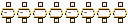
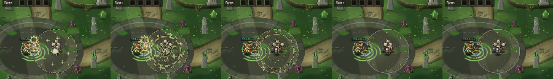
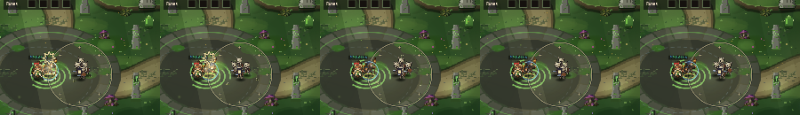
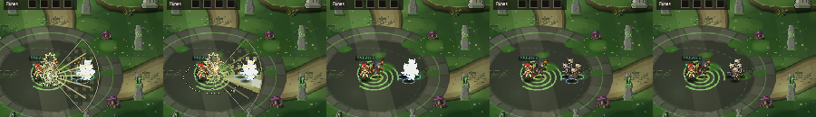
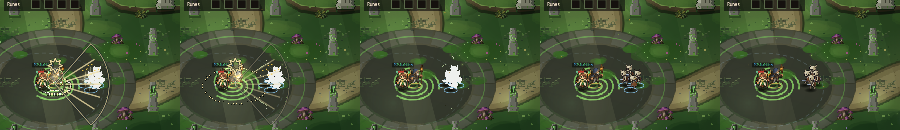
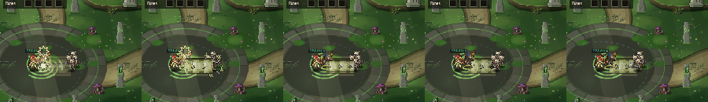
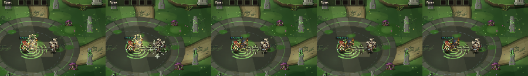

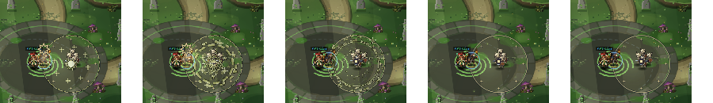
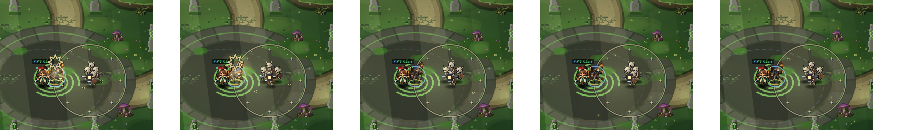
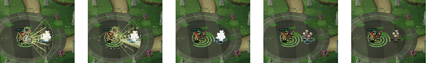
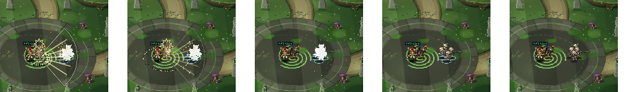
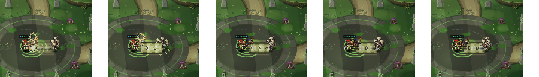
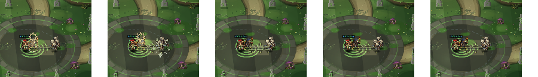
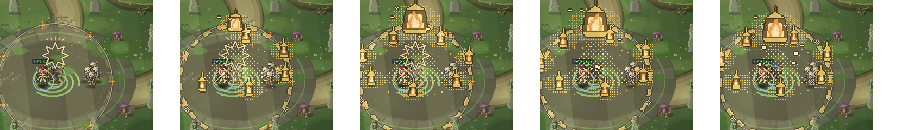